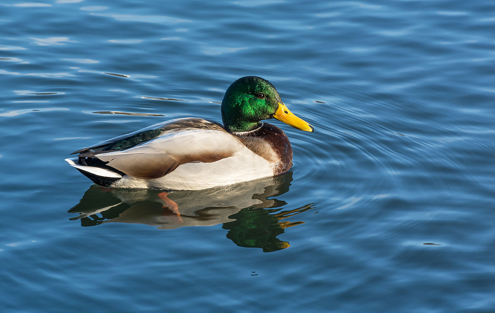

Słowo kaczka jest wyrazem pochodzenia dźwiękonaśladowczego i zaczęliśmy tak nazywać te dzikie zwierzęta w XIV wieku. Kaczki to głównie ptaki wodne, przeważnie mniejsze niż łabędzie i gęsi, i można je znaleźć zarówno w wodzie słodkiej, jak i morskiej. Mieszkają na prawie każdym kontynencie. Kaczki to ptaki wszystkożerne i żyją od 5 do 10 lat. Kaczki są czasami mylone z kilkoma rodzajami niespokrewnionych ptaków wodnych o podobnych formach, takimi jak nury lub nurkowie, perkozy, gąsiorki i łyski. Kaczki dzielimy na dzikie i udomowione. Na następnej stronie znajdziesz budowe dzikiej kaczki.
